Endpoint Deployment
Four Windows endpoints enrolled in Falcon with active sensor reporting and centralized host visibility.
ENDPOINT SECURITY • EDR • SIEM • INCIDENT RESPONSE
I deployed and configured CrowdStrike Falcon across four Windows systems, organized endpoints into security groups, applied role-based prevention policies, validated sensor communication, generated controlled detection activity, investigated process trees, confirmed process blocking, reviewed MITRE ATT&CK mappings, tested on-demand malware scanning, configured Fusion SOAR workflows, and performed endpoint containment and recovery.
The project was designed around the full endpoint-security lifecycle instead of stopping at sensor installation. I validated deployment, policy enforcement, detection, prevention, investigation, containment, recovery, and automation.
Four Windows endpoints enrolled in Falcon with active sensor reporting and centralized host visibility.
Separate domain-controller and workstation prevention policies with dedicated host groups and sensor-update management.
Controlled PowerShell activity generated Falcon detections and confirmed active process prevention.
Detection activity was mapped to Execution / User Execution with MITRE ATT&CK technique T1204.
CLIENTMACHINE was contained, isolated, restored, and verified online after containment was lifted.
Falcon Next-Gen SIEM and Fusion SOAR were used for detection visibility, workflow automation, and response orchestration.
The CrowdStrike sensor was deployed across multiple Windows roles so I could validate endpoint security across domain controllers, an administrative system, and a workstation.
CrowdStrike Falcon Cloud
|
-------------------------------
| | |
Endpoint Next-Gen Fusion SOAR
Security SIEM
| | |
+--------------+--------------+
|
Falcon Sensors
|
------------------------------------------------
| | | |
DC01 DC02 MANAGEMENT CLIENTMACHINE
172.16.10.10 172.16.10.11 172.16.30.10 172.16.20.101
Server 2022 Server 2022 Server 2022 Windows 10
Domain Controller Domain Controller Server Workstation
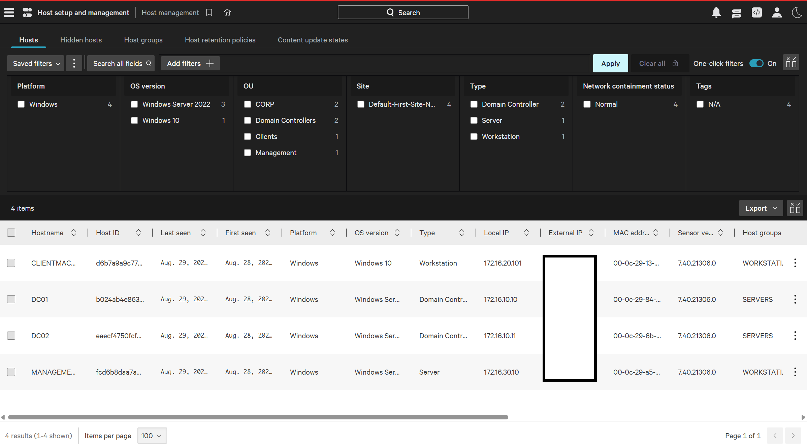
DEPLOYMENT
I verified that all protected systems appeared in Falcon Asset Inventory and that the platform correctly identified operating system, endpoint role, manufacturer, and host visibility.
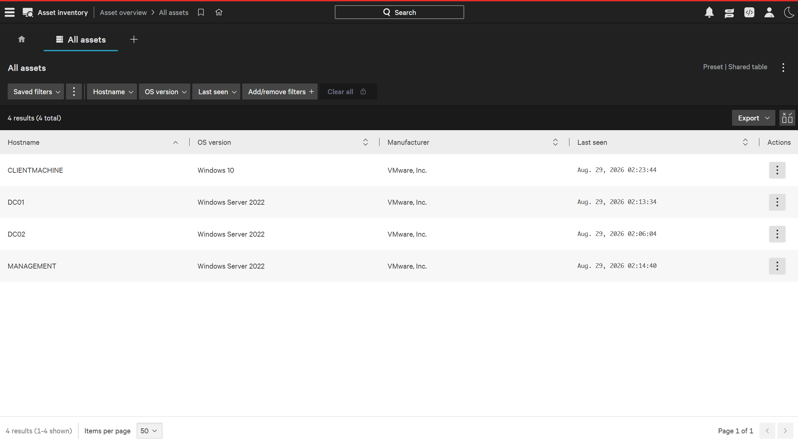
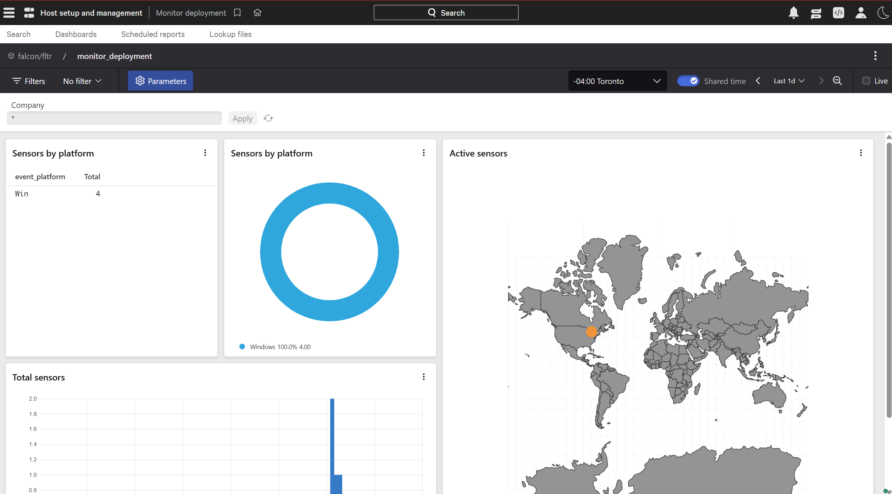
POLICY MANAGEMENT
I separated systems by role and applied different security controls instead of using a single policy for every endpoint.
DC01 and DC02 were placed into a dedicated static host group for domain-controller policy assignment.
CLIENTMACHINE and MANAGEMENT were grouped separately for workstation-focused prevention settings.
A dedicated Windows sensor update policy was applied across all four endpoints with no pending hosts.
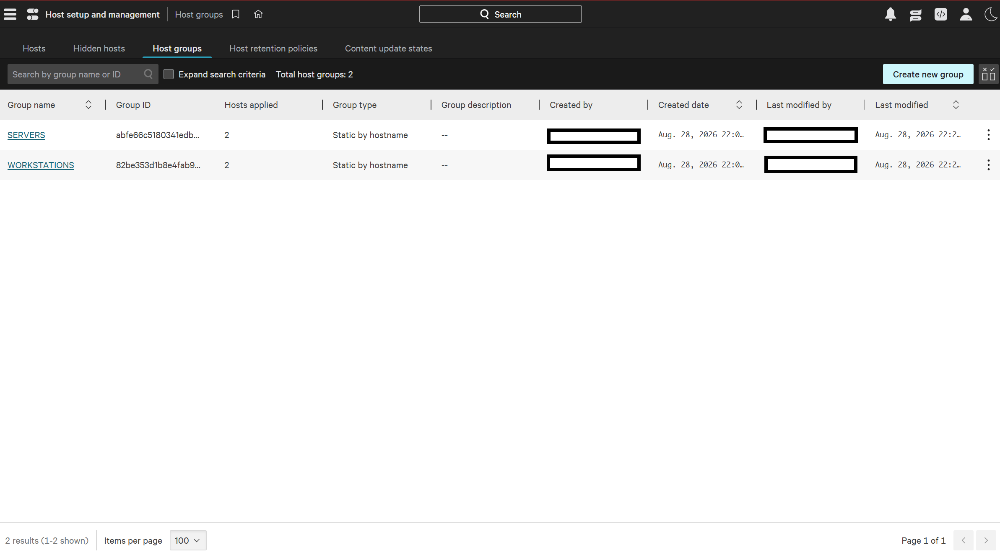
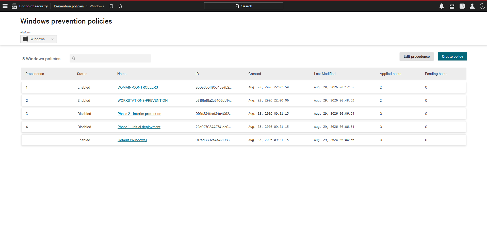
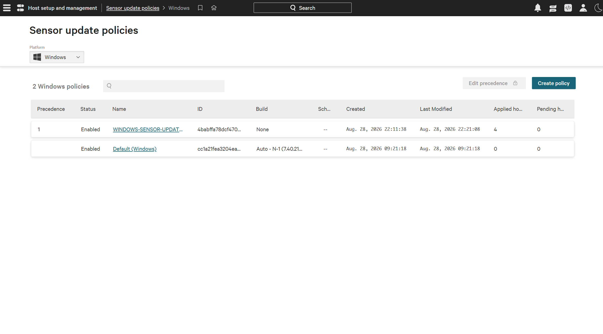
TELEMETRY
I validated Falcon telemetry in the event-search interface and confirmed that the platform was receiving host metadata and policy-related events from the protected environment.
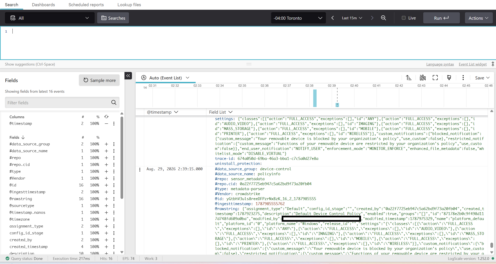
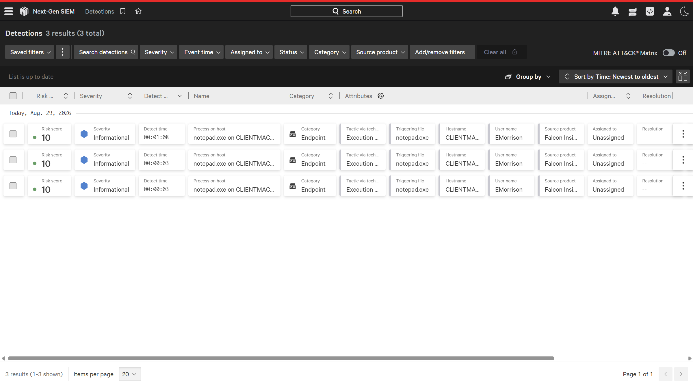
DETECTION TESTING
I generated controlled PowerShell activity on CLIENTMACHINE to validate how Falcon detected, classified, and responded to endpoint execution behavior.
Controlled PowerShell Activity
|
v
Falcon Sensor
|
v
Behavioral Detection
|
+------> Process Tree
+------> Command Line
+------> User / Host Context
+------> MITRE ATT&CK Mapping
|
v
Prevention Action
|
v
Process Blocked
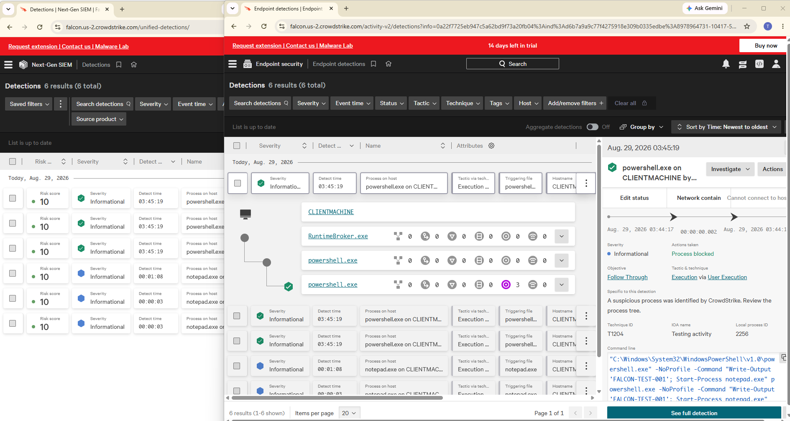
MITRE ATT&CK
Falcon mapped the controlled activity to the Execution tactic and User Execution technique, providing a standardized framework for understanding endpoint behavior.
Execution
User Execution
T1204
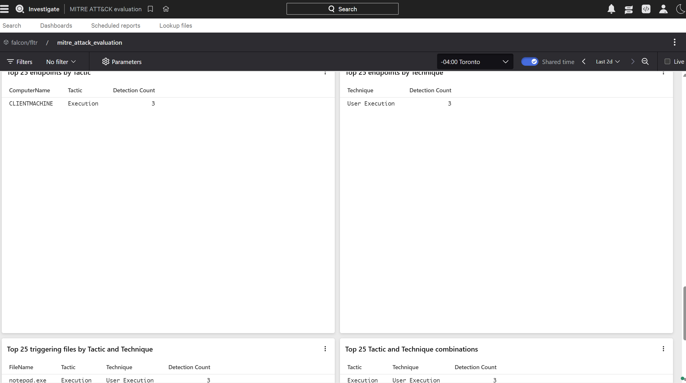
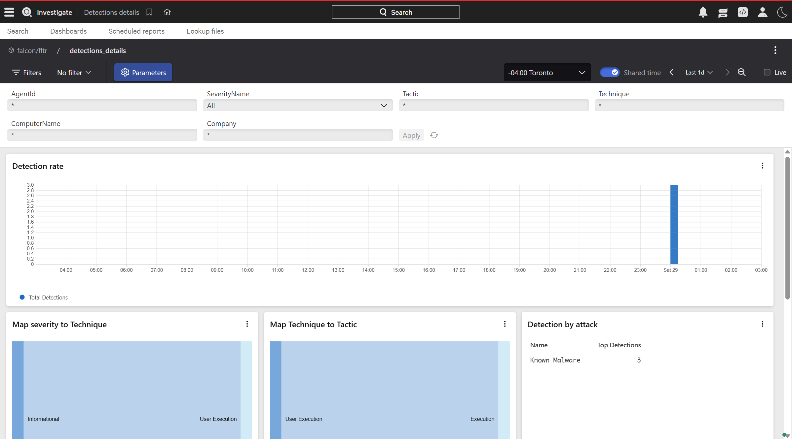
MALWARE SCANNING
I used Falcon's on-demand scanning capability to scan the protected Windows systems and review scan status, host completion, and file traversal statistics.
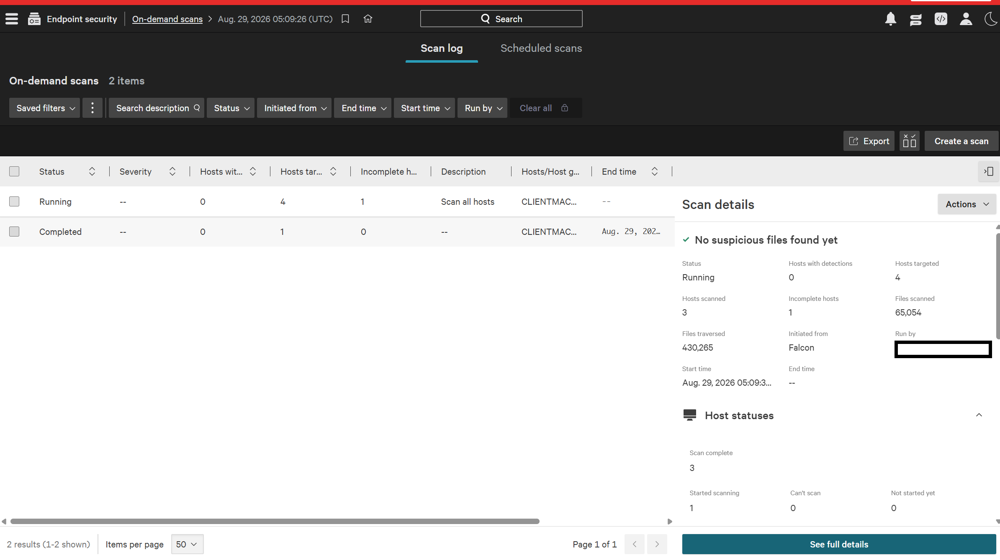
AUTOMATION
I configured Falcon Fusion SOAR workflows to automate portions of detection handling and response.
Detection-triggered workflow designed to automatically update detection status for qualifying endpoint events.
Detection-triggered automation used to add Falcon grouping tags and support consistent triage handling.
Fusion SOAR connected detections to automated actions instead of relying entirely on manual analyst intervention.
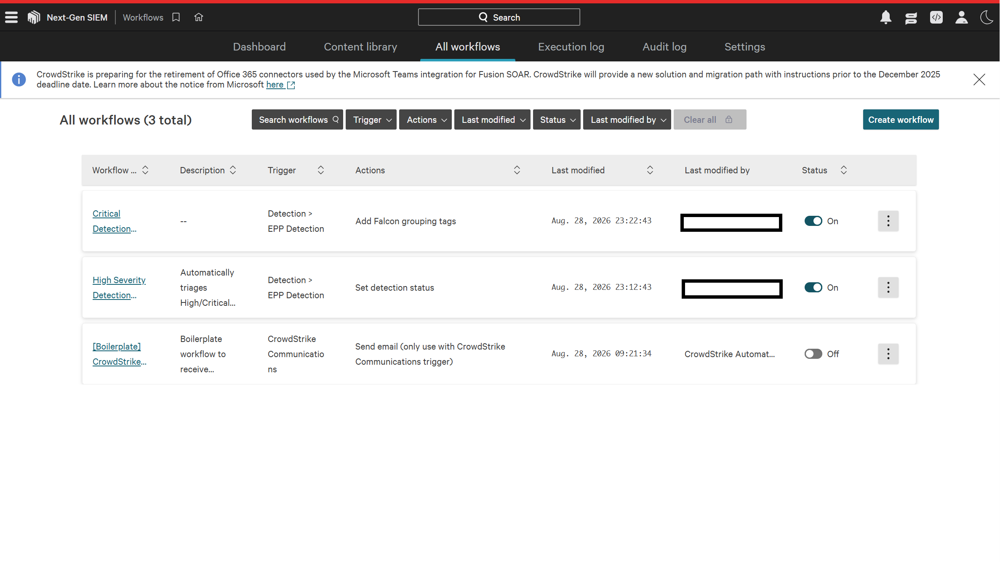
INCIDENT RESPONSE
I validated Falcon's host-containment capability by isolating CLIENTMACHINE, confirming the endpoint was taken offline, then lifting containment and verifying recovery.
Detection / Investigation
|
v
Contain Host
|
v
CLIENTMACHINE Isolated
|
v
Endpoint Shows Offline
|
v
Lift Containment
|
v
Connectivity Restored
|
v
Host Status Normal
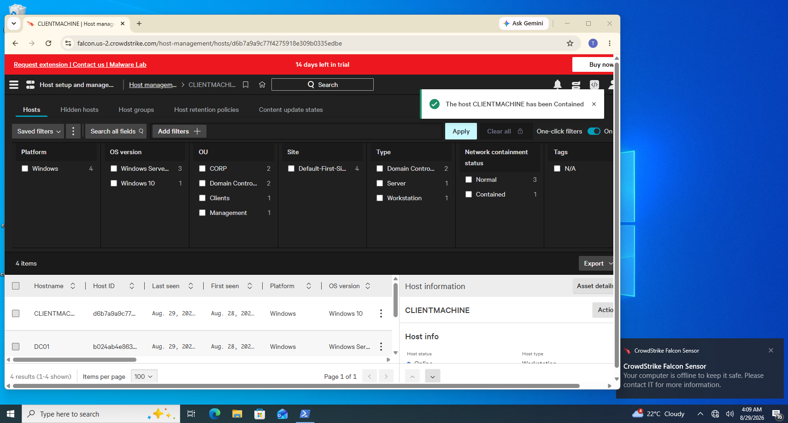
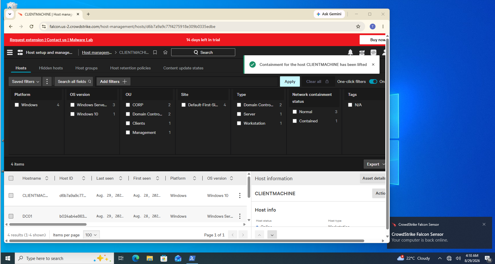
One of the most important outcomes of the project was understanding the operational difference between identifying suspicious behavior, actively stopping it, and responding to the affected endpoint.
Falcon identified endpoint activity and surfaced host, user, process, command-line, and ATT&CK context.
Falcon actively blocked the controlled PowerShell process instead of only logging the activity.
I used host containment to isolate CLIENTMACHINE and later restored connectivity after investigation.
By the end of the implementation and validation phase, the core CrowdStrike Falcon EDR workflow was operational.
Two domain controllers, one management system, and one Windows workstation enrolled successfully.
Role-based prevention and sensor-update policies applied with no pending assignments.
Falcon prevention successfully denied controlled PowerShell execution.
Detection activity mapped to Execution / User Execution (T1204).
Endpoint isolation, containment removal, and restored connectivity were all validated.
Next-Gen SIEM telemetry and Fusion SOAR workflows were incorporated into the project.
This case study documents the complete project workflow from sensor deployment and policy configuration through detection, prevention, investigation, SIEM visibility, SOAR automation, containment, and recovery.